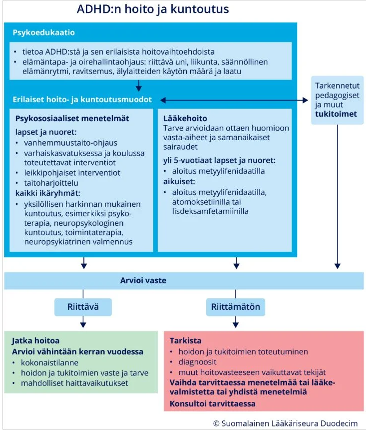

Kappale 8 2020
8.1 Tentti
Taas vain yksi tentti tälle vuodelle ja taas löytyy mallivastauksia wikistä, joita hyödynnetty tässä. Aikaisemmissa tenteissä yksi sama kysymys (vapinapelko ja masennus), joten ei sitä uudestaan.
8.1.1 NEET vastaanotolla ylävatsavaivojen ja uniongelmien takia
23 v. yksin vuokralla asuva normaalipainoinen, perusterve mies. Kotoisin alun perin eräästä Kainuun alueen kunnasta, ylioppilastutkinnon suorittanut siellä ja muutti sitten Turkuun opiskelujen vuoksi. Opiskeli tietojenkäsittelyä ammattikorkeakoulussa vuoden, mutta opinnot keskeytyneet miltei 2 vuotta sitten ja on hiljattain ilmoittautunut työttömäksi työnhakijaksi. Hakeutuu nyt terveyskeskukseen vastaanotollesi valittaen puristavaa tunnetta ylävatsalla ja uniongelmia. Vatsatuntemukset alkaneet n. puoli vuotta Turkuun muuton jälkeen. Vastaanoton aikana käy ilmi, että potilas lopettanut opintonsa koska koki opiskelumotivaationsa heikentyneen ja koki myös joidenkin opiskelijoiden suhtautumiseen muuttuneen vihamielisemmäksi potilasta kohtaan. Lisäksi kuuli ajoittain nimeään huudettavan koulun käytävillä vaikkei ketään näkynyt. Lopulta keskittyminen opintoihin oli varsin huonoa lisääntyvän ahdistuksen vuoksi. Hän kertoo olevansa nyt varsin vähän muiden kanssa tekemisissä, mutta viettää varsin paljon aikaa netissä erilaisia pelejä pelaten.
Miten lähdet selvittämään asiaa? Pohdi erilaisia diagnostisia ja erotusdiagnostisia vaihtoehtoja, pohdi erikseen toimintasuunnitelmaa
- tilanteessa, jossa potilas on halukas jatkoselvittelyihin ja
- tilanteessa, jossa potilas ei halua jatkoselvittelyjä ja ajattelee ongelmien poistuvan kun vain saa unilääkereseptin ja nukuttua paremmin.
Aloitetaan tulosyistä ja pyritään luontevaan kontaktiin: a) Vatsa tutkitaan normaalisti, miten ja missä ilmenee blaa blaa, laboratoriokokeet, tarv. UÄ normaalin käytännön mukaan, b) Uniongelman laatu (unihäiriön tyyppi (nukahtamisvaikeus, heräilyongelmaa, herääkö liian aikaisin), pahentavat, helpottavat tekijät)
Kysellään muut oireet (voi olla useammastakin asiasta kyse) aloittaen ahdistusoireiden laadusta ja ilmenemisestä, sitten mielialasta (tärkeänä itsemurha-ajatukset). Psykiatristen oireiden kyselyssä voi käyttää ”lievennyksiä” (esim. joillain potilailla on uniongelmaan on liittynyt tällaista…).
Erityisen tärkeää on psykoosiriskin kartoittaminen
Yleinen psykiatrinen anamneesi
Työdiagnoosi: Vatsa tutkitaan, oireiden taustalla psykoosia ennakoiva oireilu? Mieliala/ahdistuneisuushäiriö ?
Kaiken selvittelyyn voi mennä runsaasti aikaa Jos potilas on selvitysmyönteinen eikä selvästi psykoottinen eikä itsetuhoinen, niin lab+ mahd muut vatsaselvitykset tehdään ja sovitaan suhteellisen nopea (esim. ensi viikolla) kontrolliaika vastauksia kuulemaan. Voi ohjata myös psyk.sh:lle jos sellainen on tk:ssa.
Konsultoi psykiatria! Psykoosisairauden prodromaaliepäily on selvä ja jatkoselvityksiä pääsääntöisesti tehdään erikoisairaanhoidossa (jossa muiden informaatiolähteiden huomioiminen onnistuu paremmin) eli lähete sinne, joskus harvoin selvitykset tk:ssa konsultaatioiden tuella. Toimintakyky on laskenut ja potilas apua hakeva. Mielialahäiriö/ahdistuneisuushäiriö niin ikään mahdollinen alkudiagnoosi riippuen löydöksistä, ja lisäselvitysten syy voidaan potilaalle näin muotoillakin. Uniongelmaan voi lyhytaikaisesti kokeilla tarvittavaa unilääkettä riippuen minkälainen uniongelma on esim. ketiapiini 25 mg yöksi , tai Imovane 7,5 mg. Ei pitkiksi ajoiksi ennen kuin on selvitetty mistä on kysymys. Lyhytaikainen unilääkkeen määrääminen (ml bentsodiatsepiinitkin riippuen päihdeanamneesista) on tällaisessa tilanteessa täysin hyväksyttävää.Potilas haluaa vain somaattiset tutkimukset ja ajattelee että vaivassa ei voi olla psyykkisiä tekijöitä. Somaattiset tutkimukset tehdään, tarv. psykiatrian puhelinkonsultaatio ja yllä mainittu unilääkekokeilu, jonka jälkeen seurantakäynti taas vastauksia kuulemaan, jolloin tilanteen uusi arvio. Jos ei halua jatkoselvityksiä, potilaalle neuvotaan kanavat, että minne hakeutuu jos oireilu pahenee.
Jos käy ilmi, että on psykoottinen tai psykoosiepäily ja ei sairauden tuntoa eikä ole yhteistyökykyinen -> M1 harkinta. Niin ikään psykoottisuuden epäily + korkea im-riski johtaa M1 harkintaan. Lähtökohtaisesti jatkoselvityksiä toki yritetään vapaaehtoiselta pohjalta.8.1.2 ADD-epäily
28-vuotias nainen tulee terveyskeskukseen ajanvarausvastaanotollesi. Potilas on ilmoittanut tulosyyksi ”keskittymisvaikeudet, ADD-epäily”. Vastaanotolla korkeakoulututkintoa suorittava potilas kertoo vaikeuksista keskittyä luento-opetukseen ja tenttikirjallisuuteen. Luennoilla ajatukset harhailevat ja lukiessa tenttiin pienikin häiriötekijä katkaisee herkästi ajatuksen. Potilas kertoo kokeisiin lukemisen olleen vaikeaa jo ala-asteella. Potilas kertoo etenkin lukemisen olleen aina ”tervan juomista”. Potilaan peruskoulun päättötodistuksen arvosanojen keskiarvo oli noin 9. Ylioppilaskirjoitusten potilas kertoo menneen hyvin, muttei muista tarkkaan arvosanoja. Yliopistolla on joutunut todella pinnistelemään saadakseen ylläpidettyä hyviä arvosanoja ja on ollut tämän seurauksena ajoittain selvästi kuormittunut. Potilas kertoo vanhempiensa kuvailleen potilasta ulospäinsuuntautuneena, touhukkaana, vilkkaana ja puheliaana lapsena. Potilas kokee olleensa selvästi isoveljeään vilkkaampi. Potilaalla ei ole tiedossa somaattisia sairauksia. Potilas on käyttänyt 22-24-vuotiaana yleistyneen ahdistuneisuusoireiston hoitoon essitalopraamilääkitystä, jolla oireet selvästi lievittyivätkin.
- Selitä kattavasti miten toteutat perusterveydenhuollossa potilaan epäilemän tarkkaamattomuushäiriön diagnostisen arvion, ja tulosyyksi mainitun oireen erotusdiagnostiikkaa?
- Listaa ja perustele mahdolliset tulosyytä selittävät diagnoosit
- Miten ja missä potilaan neuropsykiatriset tutkimukset voidaan toteuttaa?
- Mikäli potilaalla todetaan tarkkaamattomuushäiriö, mitä hoitoja voidaan harkita tulosyyoireen helpottamiseksi?
- Kerro lisäksi miten toteuttaisit stimulanttilääkehoidon aloituksen erikoissairaanhoidossa, ja miten lääkehoidon seurantaa toteutetaan perusterveydenhuollossa, mikäli potilaalla todettaisiin tutkimuksissa aktiivisuuden ja tarkkaavaisuuden häiriö
- Potilaan kuvaama häiriöherkkyys, keskittymisvaikeudet, ajatusten harhailu, pitkäkestoisen ponnistelun ylläpidon vaikeudet ja psyykkinen tai kognitiivinen kuormittuneisuus voivat sopia mihin tahansa näistä.
- Eivät kuvaudu todennäköisinä sillä primaari lähtötaso kuvautuu koulumenestyksen perusteella hyvätasoisina
Komplisoitumattoman (ei rinnakkaishäiriöitä) tarkkaamattomuushäiriön diagnostiikka voidaan toteuttaa erikoissairaanhoidon yksikössä tai paikallisesti sovitussa opiskelija- tai perusterveydenhuollon yksikössä, jossa on mahdollisuus konsultoida tarkkaamattomuushäiriöihin perehtynyttä erikoislääkäriä. Vaikeat tapaukset pääsääntöisesti psykiatrian erikoissairaanhoidossa, esimerkiksi neuropsykiatrian poliklinikalla.
Potilaan voisi mahdollisesti tutkia ja hoidon toteuttaa PTH:ssa, mutta anamneesia tulee täydentää, jotta voidaan varmistua tilanteen soveltuvuudesta perusterveyden hoitoon.Aikuisiällä todetuille tarkkaamattomuushäiriöpotilaille tulisi antaa aina mahdollisuus psykoedukaatioon. Kerrotaan ADHD:n taustasta, tyypillisistä oireista, sen ennusteesta, ja hoitokeinoista. Lisäksi tulisi aina antaa ohjeita oireiden helpottamiseen elintapojen kautta, esim. median terveellinen kuluttaminen, hyvä unihygienia, säännöllinen liikunta, säännöllinen ruokarytmi… Myös muusta psykososiaalisesta hoidosta voi olla hyötyä ja sitä toteutetaan toimintaterapian, neuropsykiatrisen valmennuksen, neuropsykologisen kuntoutuksen ja psykoterapian muodoissa.
Jos koetaan tarvetta lääkehoidolle, niin aikuisiän tarkkaamattomuushäiriöiden oireiden hoitona voidaan käyttää ensisijaisesti stimulantteja (metyylifenidaatti, lisdeksamfetamiini) tai atomoksetiinia.

Lääkkeen aloitus PTH:ssa on kyllä mahdollista, mutta käytännössä se vaatii aina psykiatrin konsultaation.
Lääkkeen aloitusta edeltävästi kartoitetaan lääkkeen käyttöön liittyvät riskit: EKG, RR-taso, fokusoitu kardiovaskulaarianamneesi ja tarvittaessa kardiologin konsultaatio. Päihdehäiriöiden poissulku on tarpeellista ja se toteutetaan anamnestisesti ja tarvittaessa huumeseuloilla. Päihdehäiriöt tulee poissulkea, koska vaikka suurin osa suomalaisista käyttää ADHD-lääkkeensä ohjeen mukaan, on hoitoa suunniteltaessa ja hoitovastetta arvioitaessa huomioitava, että ADHD-lääkkeiden väärinkäyttö on mahdollista.